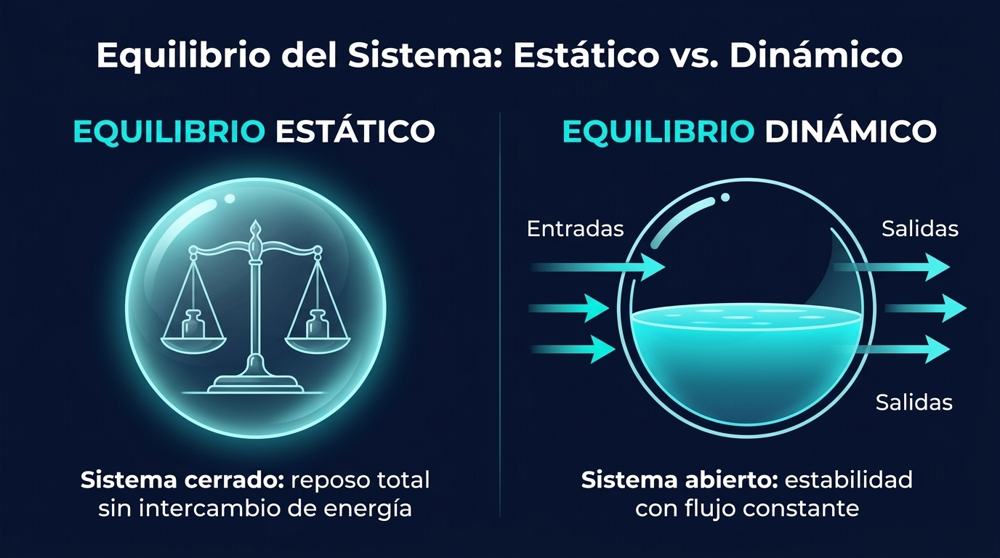
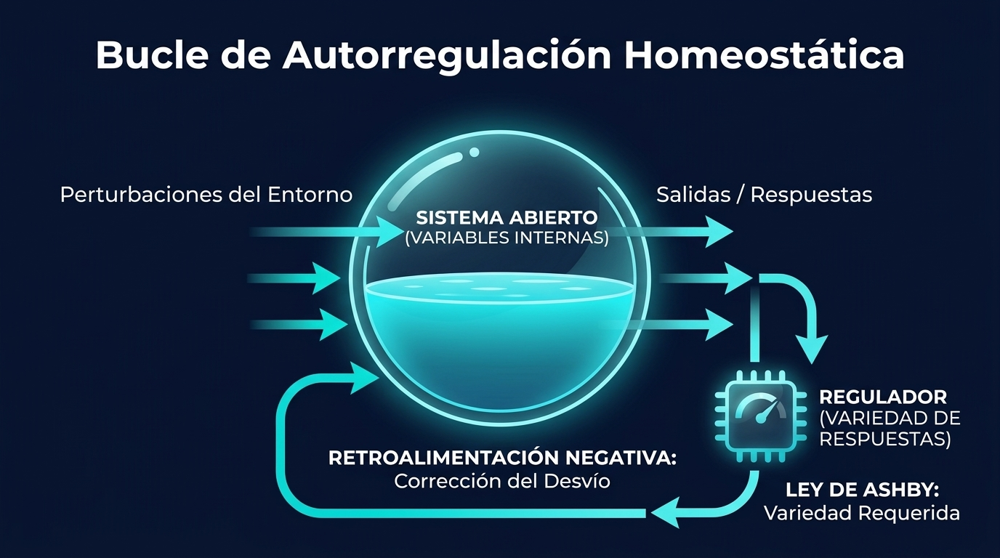

Parámetros de los Sistemas
Son las constantes o propiedades fundamentales que definen la estructura, el funcionamiento y los límites de todo sistema frente a su entorno (Bertalanffy, 1968; Chiavenato, 2019).
📥 Entrada (Input)
Recursos, datos, energía o materiales que el sistema importa del entorno para iniciar su operación.
⚙️ Procesamiento (Throughput)
Transformación interna de las entradas mediante subsistemas que generan valor o cambios de estado.
📤 Salida (Output)
Resultados, productos, información o energía exportados hacia el ambiente tras el procesamiento.
🔁 Retroalimentación (Feedback)
Retorno de información sobre la salida para comparar el desempeño con un estándar y corregir desviaciones.
🌐 Ambiente (Entorno)
Medio externo que rodea al sistema, le provee insumos y recibe sus resultados continuamente.
🛡️ Límite o Frontera
Línea real o conceptual que separa al sistema de su entorno y regula qué entra y qué sale.
Explorador Rápido de Parámetros (Haz clic en cada uno)
| Parámetro | Rol en el Sistema | Ejemplo en Ingeniería |
|---|---|---|
| Entrada | Abastece de insumos y energía al sistema. | Consultas SQL o tráfico de red entrante. |
| Proceso | Convierte entradas en resultados útiles. | Algoritmos de cálculo y lógica de negocio. |
| Salida | Entrega el resultado final al entorno. | Reportes, respuestas JSON o alertas en pantalla. |
| Retroalimentación | Permite control y mejora continua. | Logs de monitoreo y métricas de latencia. |
Homeostasis y Equilibrio en los Sistemas
Mecanismos de estabilidad y autorregulación según Cannon (1932), Ashby (1956) y Bertalanffy (1968).
⚖️ Equilibrio del Sistema
Estado donde las fuerzas internas y externas se compensan:
- Equilibrio estático: Reposo total en sistemas cerrados sin intercambio de energía.
- Equilibrio dinámico (Estado Estacionario): Estabilidad en sistemas abiertos con flujo constante de entradas y salidas.

🔄 Homeostasis
Capacidad de un sistema abierto para autorregular sus variables internas frente a cambios externos mediante retroalimentación negativa.
Ley de Ashby: El regulador debe tener tanta variedad de respuestas como perturbaciones genere el entorno.

Bucle de Regulación Homeostática (Haz clic en cada fase)
| Aspecto | Equilibrio Estático | Homeostasis (Equilibrio Dinámico) |
|---|---|---|
| Sistema | Cerrado o aislado. | Abierto en intercambio continuo. |
| Flujo de energía | Nulo al llegar al reposo. | Constante (entradas y salidas activas). |
| Control | Balance pasivo de fuerzas. | Retroalimentación negativa adaptativa. |
☁️ Auto-Scaling Cloud
Si la CPU sube al 90%, el balanceador crea nuevos servidores y los apaga cuando baja la demanda.
🌡️ Termorregulación
Ante calor externo, el cuerpo activa el sudor para mantener su temperatura interna cerca de 37°C.
📦 Inventario ERP
Cuando el stock baja del mínimo, el sistema genera órdenes de compra automáticas para evitar quiebres.
Preguntas y Ejercicios Prácticos
Selecciona la opción correcta para obtener retroalimentación inmediata.
1. Un termostato mantiene una sala a 22°C encendiendo el enfriamiento cuando sube a 25°C y apagándolo al volver a 22°C. ¿Qué parámetro actúa?
2. ¿Qué parámetro de los sistemas define qué elementos pertenecen al sistema y cuáles al entorno?
3. Un firewall con reglas manuales fijas colapsa ante un ataque masivo automatizado. Según Ashby, ¿qué falla?
4. ¿Por qué una empresa activa o un organismo vivo no operan en equilibrio estático?
Juegos Interactivos
Practica el control homeostático en tiempo real y relaciona los conceptos clave.
🎮 Juego 1: Simulador de Homeostasis en Servidor
Mantén la carga dentro de la zona verde (35% - 65%) durante 20 segundos frente a variaciones aleatorias.
🧩 Juego 2: Conecta Concepto y Definición
Haz clic en un término de la izquierda y luego en su definición correcta a la derecha.
Videos de Apoyo
Material audiovisual sobre Teoría General de Sistemas, homeostasis y equilibrio dinámico.
Teoría General de los Sistemas (Bertalanffy)
Resumen animado sobre entrada, proceso, salida, retroalimentación, ambiente y homeostasis en los sistemas.
Características y Parámetros: Homeostasis y Ley de Ashby
Explicación en Teoría General de Sistemas sobre autorregulación, equilibrio dinámico en sistemas abiertos y variedad requerida.
Evaluación
Responde las 5 preguntas para calcular tu nota automática sobre 5.0.
Créditos y Referencias
Autor institucional y bibliografía del Objeto Virtual de Aprendizaje.
👨💻 Autoría
- Estudiante: Camilo Andrés Fuentes López
- Docente: Eddy Ortiz Ramirez
- Tema: Parámetros de los sistemas (Homeostasis y Equilibrio)
- Asignatura: Teoría General de Sistemas (TGS)
- Programa: Ingeniería de Sistemas · Periodo 2026-2
- Institución: Universidad Simón Bolívar · Campus Cúcuta
- Herramientas: HTML5, CSS3 y JavaScript con apoyo de IA (Gemini)
📚 Referencias
- Ashby, W. R. (1956). An Introduction to Cybernetics. Chapman & Hall.
- Bertalanffy, L. von (1968). General System Theory. George Braziller.
- Cannon, W. B. (1932). The Wisdom of the Body. W. W. Norton & Company.
- Chiavenato, I. (2019). Introducción a la Teoría General de la Administración. McGraw-Hill.
- Johansen Bertoglio, O. (2004). Introducción a la Teoría General de Sistemas. Limusa.